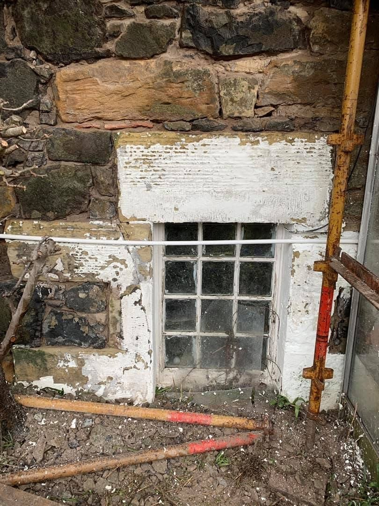
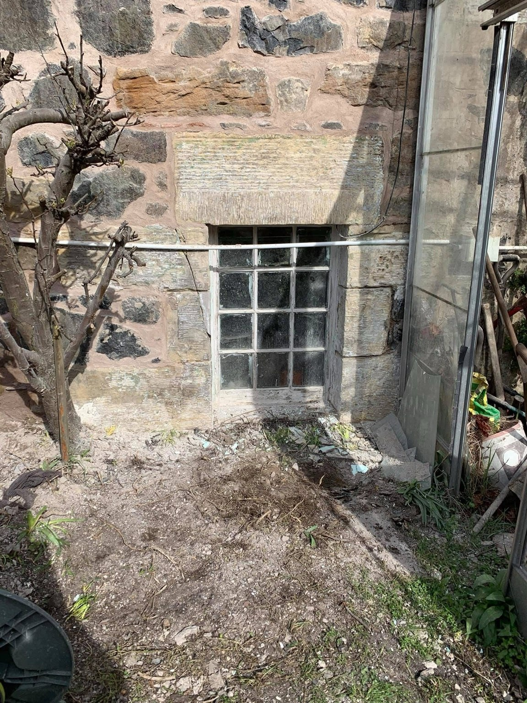
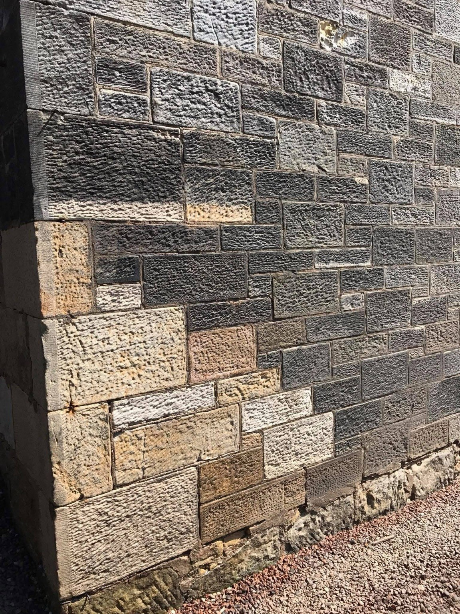
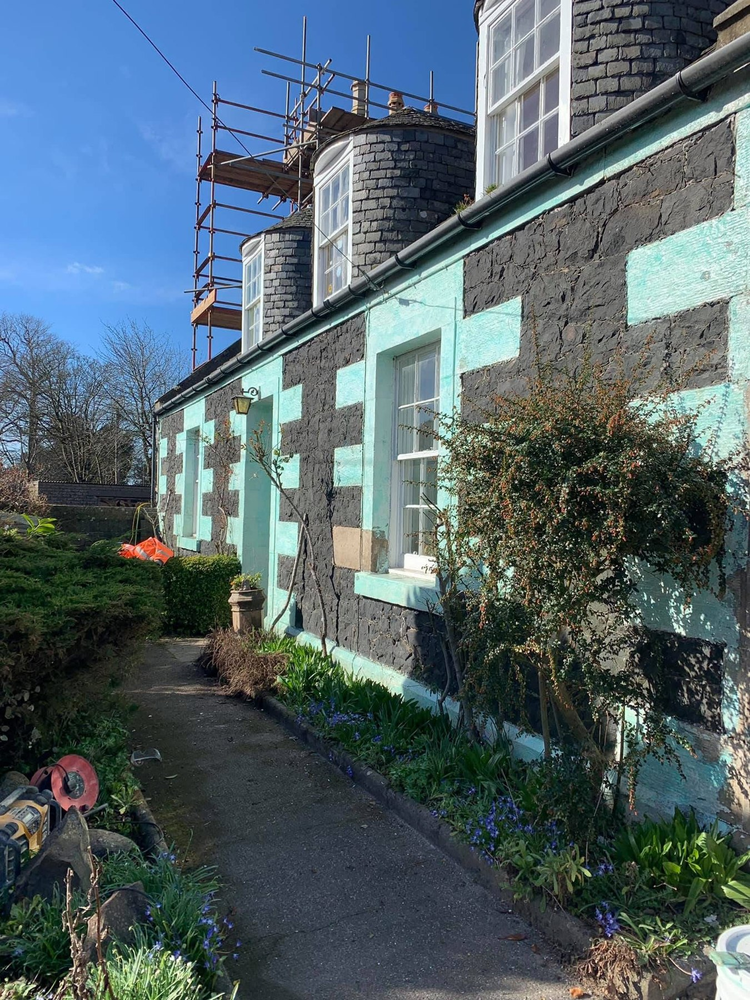
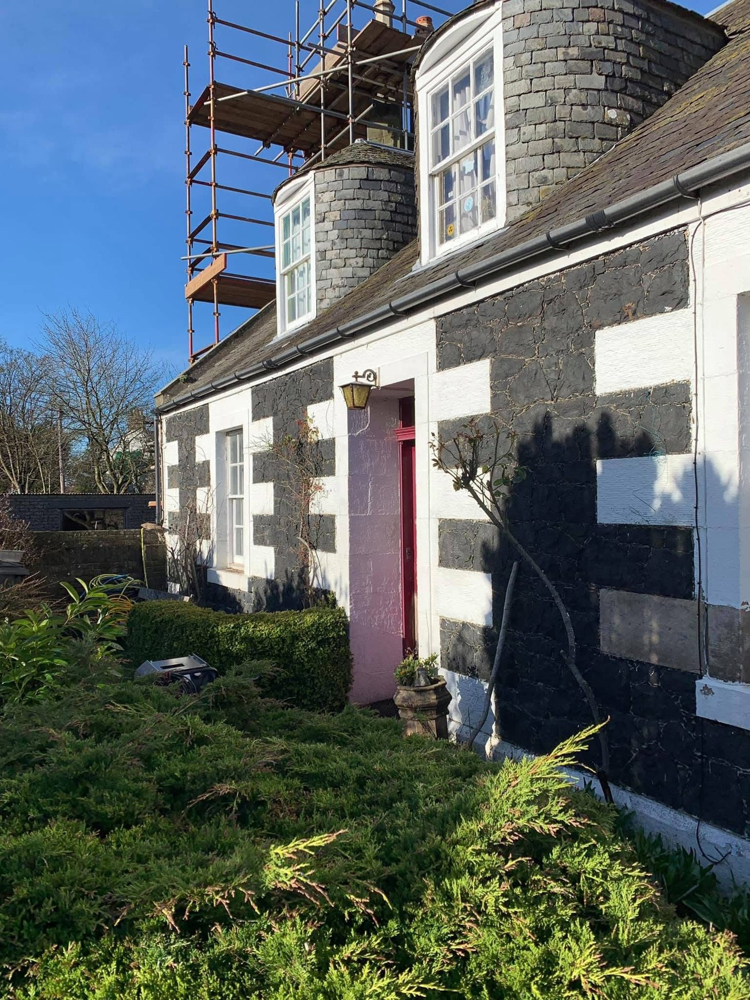
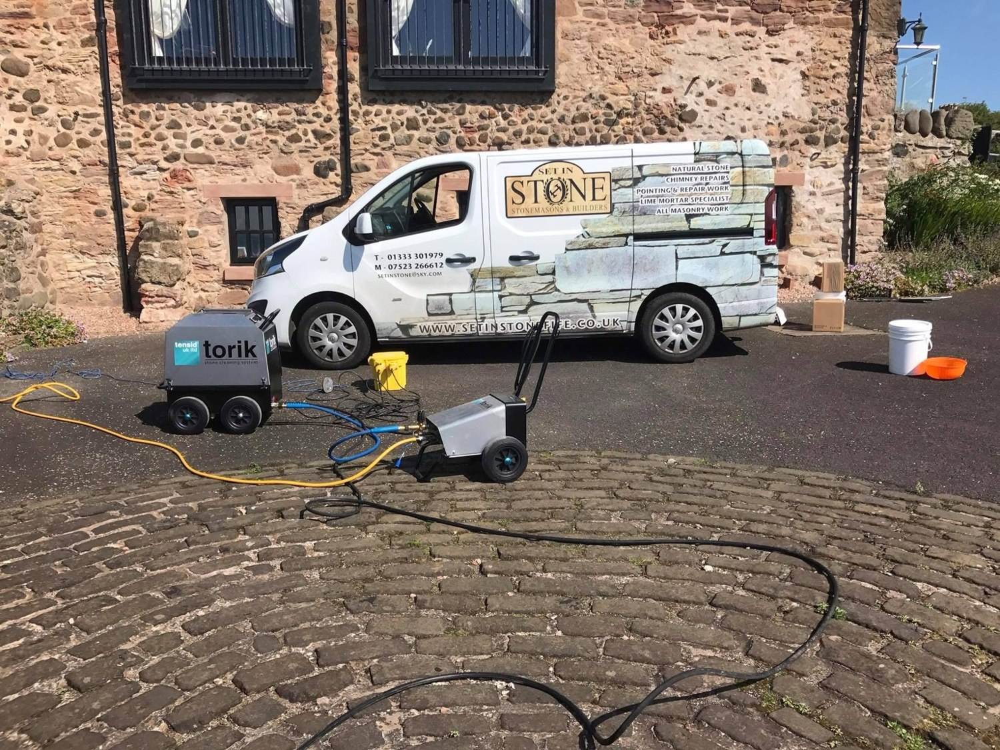
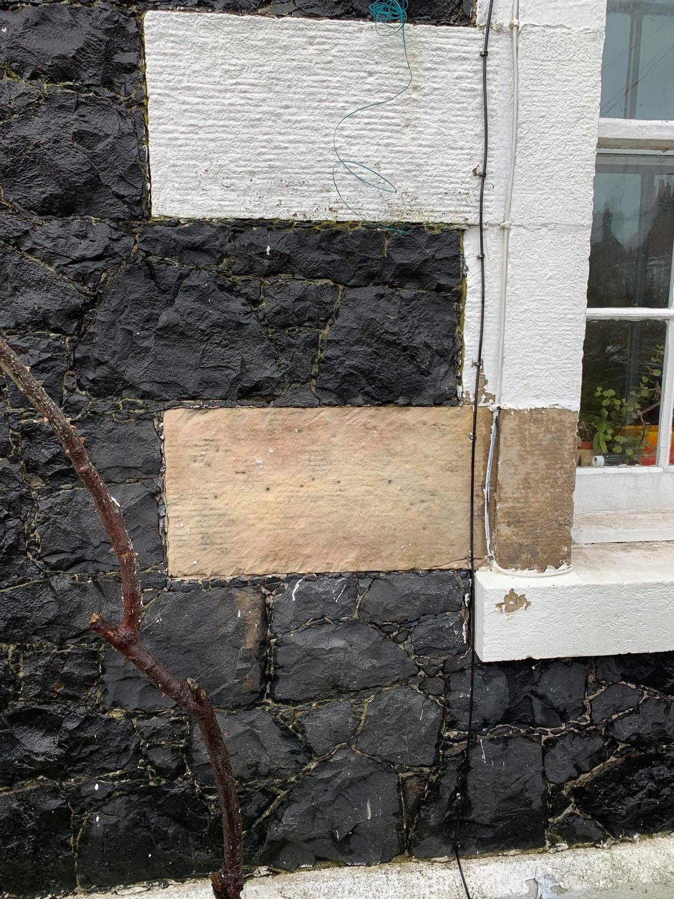
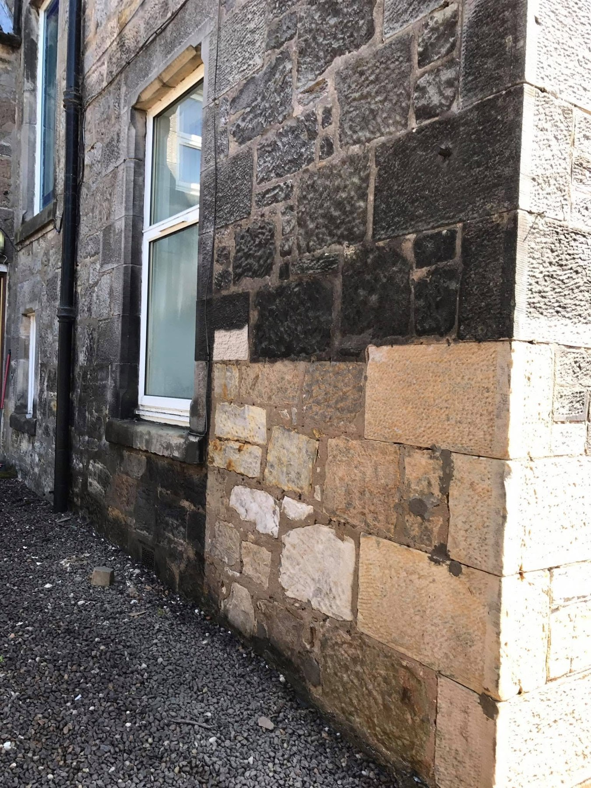
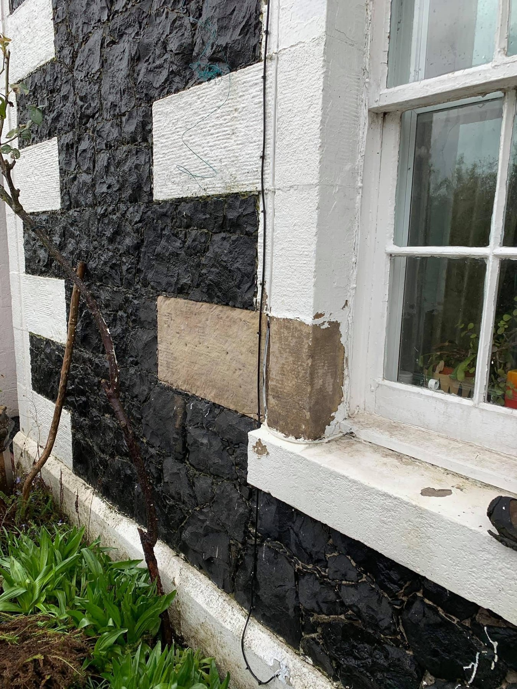
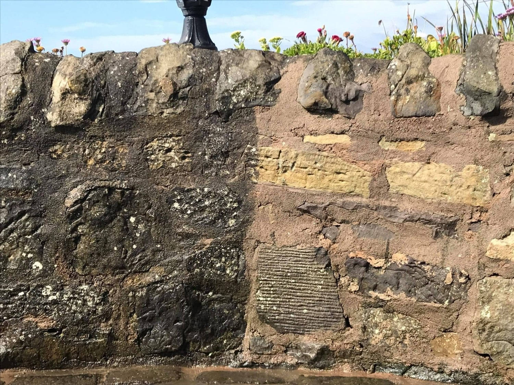

01 / STONE WINDOW SURROUND
Natural stone, rediscovered.
Removing the old coating reveals the warm sandstone and detail around this traditional window.

REVIVE MASONRY CLEANING SOLUTIONS
Years of weathering. Layers of old paint. Beautiful stone waiting to be seen again.
Masonry and exterior cleaning that brings the character of your property back into view.
See the difference ↓A FRESH CHAPTER FOR YOUR PROPERTY
Stone has a story to tell. Built-up dirt, weathering and old coatings can hide the colour and detail that make a building special.
At Revive Masonry Cleaning Solutions, our work is about bringing that character back. From individual stone details to entire exterior elevations, explore the difference in our own project photographs below.
Tell us about your project ↗THE DIFFERENCE IS IN THE DETAIL
Our own work, shown before and after.
Full photographs. Every detail in view.


Removing the old coating reveals the warm sandstone and detail around this traditional window.


A clearer view of the masonry, with the original stone taking centre stage.
WHAT WE CAN HELP WITH
Bring the colour, texture and detail of stonework back into view. Send us photos so we can discuss your surface and its condition.
Looking to reveal the masonry beneath an old coating? Show us the painted area and we’ll discuss the next steps.
Cleaning for external stonework and masonry affected by everyday dirt and weathering, from small features to larger elevations.

IT STARTS WITH YOUR PROPERTY
Every surface is different. A few photos help us understand the stonework, the finish and what you want to achieve.
Include the whole area and a close-up of the surface.
Tell us about the property and the result you have in mind.
We’ll discuss the details and arrange the next step.
A CLOSER LOOK
More details from our masonry cleaning projects.




LET’S BRING IT BACK TO LIFE
Tell us what needs cleaning. Send your enquiry to WhatsApp, then add photographs directly in the chat.
Demo contact links — the business number will be added before launch.